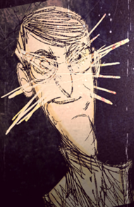

| William Carter | |
|  |
William Carter looks very similar to Maxwell. He is tall and wears a suit, though the differences in appearance is that he wears glasses, and his chin is more rounded. Also, in every picture he appears in, there appears to be scratches or scribbles on his face.
The first puzzle leads to William's inspection card that says APPROVED, boarding a ship named Quest to the United States. He seems to have health problems.
The second puzzle leads to an advertisement for William's magic show. The advertisement has a picture of William pulling a rabbit out of his hat, and in this picture, William's face is scratched out. Some text on the ad reads:
Performing feats of the mysterious for your entertainment and edification.
The third puzzle shows a desk with multiple papers on it.
One of them is a bill from a man named George T. Witherstone for magician's props totaling $7.10. There is a large red 'OVERDUE' stamped on the bottom.
Another paper appears to be a note to William, which reads:
William! 'You are late again! Where is the muny? Do you think Mr. Witherstone is runnin a charatee? You better pay up-this week or there will be trubble! I will find you!
There is also a postcard on the desk, which, according to the letter, may be from William's brother:
William,
You've finally come to America! How exciting! Has your show taken New York by storm yet? I fear we may have just missed each other - the city was too much for me, so I've gone west - It really is amazing out here - maybe you could visit sometime?
Have you corresponded with mother lately? The post is dreadfully inconsistent out here, I can't believe she hasn't met the Twins yet! (The twins could be referring to Wendy and Abigail)
Warmest regards, Jack.
The fourth puzzle is an article from a newspaper which has been torn out, a circus poster, some blueprints of what appears to be an obelisk, a postcard to Jack Carter and a Coach Ticket.
The Newspaper reads:
TRAGIC TRAIN CRASH
Circus wagon struck at crossing
Many passenger injuries reported
Elephant unharmed
A passenger train struck a circus wagon that had broken down along the tracks at the Old Mill crossing. Dozens of passengers were injured, and at least one man is missing. The missing man has yet to be identified, but fellow passengers described him as a tall, nervous fellow with an English accent. A search party was convened but quickly abandoned when it became apparent that (Second column begins after tear in the first column) cage full of potentially dangerous trained monkeys had been vacated in the collision. Given the remoteness of the crash site, the scorching desert sun, the missing man has been presumed dead.
This is the third such incident at the crossing since the railway's construction in 1875, but the first to involve a circus wagon. Local businessman and railway investor Harold J. Rutherford assured this publication that all portinant safety precautions had been taken, but no one could have foreseen the appearance of such a dangerous blockage on the tracks
The date of the paper is August 23 [not 23rd, possibly an error] 1904.
The Circus poster has the words ABERNETHY & PARKER CIRCUS written at the top. There is an elephant balanced on a ball with flamingoes on its back and left ear. A man that looks to be Wes is balanced on its head on with one hand. Two monkeys wearing fezes are standing next to the ball.
Below this picture it reads:
COMING TO YOUR TOWN!
GOOD SPRINGS BULLFROG DELAMAR ROUND MOUNTAINS
KLONDYKE HARSHAW CHARLESTON FAIRBANK [bold words appear smaller to show a different attraction on the poster]
DON'T MISS THE INCREDIBLE STRONGMAN
The Strongman could be Wolfgang, as his nickname is The Strongman and the poster contains the same weight in his character poster.
From this poster it could be speculated that Wes and Wolfgang are somehow involved in the circus, or even with William Carter himself.
The postcard to Jack Carter reads:
Jack,
The strangest thing has happened! Please discount all reports of my demise, should they reach you. I am very much alive, despite my misadventure.I have discovered something, a book of sorts I have yet to decode it fully, but what little I have deciphered has opened my mind to tempting new possibilities. I shan't say more through post - I fear it may attract unwanted attention. All will be explained when we meet. I shall continue west forth with! -William
The address has been scribbled out with red ink, but some things can still be read, e.g. Jack Carter and CA. The postcard is postmarked in Nevada.
The coach ticket reads:
SUNSET LINES
NEW YORK (GRAND CENTRAL) TO:
San Fransisco - Mission Stn. (Exc'nge)
Date: August 15th, 1904
There is some red text running down the left and right hand side reading 'No. 702', a black stamp at the bottom saying 'COACH CLASS'.
The Obelisk Blueprint:
There is no readable text on the obelisk blueprint, but there are many symbols and measurement lines. The page appears to be torn out of something, possibly the book mentioned on the postcard.
Background
The ground is made of cracked rock. At the very top in the middle is concentrated sunlight, a glare; this might be the desert mentioned in the newspaper article. Two shadows are standing over the scene; one seems to have no eyes, as there is no shadow where the eyes should be.
In the source code there is ASCII art of the Shadow Watcher.
The fifth puzzle shows a 'Maxwell the Great' poster, a classified ad requisition, a sketch of a staff and amulet, and what may be a journal page. In the source code, there is ASCII art of Maxwell.
The journal page reads:
A terrible form took shape in the air above the ritual last night! It was large and indistinct, but its countenance was infused with a sort of alien malevolence that chilled me to my very core. My fear was so great that I almost faltered in my incantations.
It made no hostile motions, however and after having hung in the aether for a time, it shivered out of existence. What was it? Was it observing me? Is it the guardian of some deeper secret to which I am drawing closer? In any event, I am not keen to meet its like again.
Along with the description is a drawing of a Terrorbeak.
The ad requisition reads:
San Francisco Call Classified Advertisement Requisition'
To appear in the [X] early [x] late edition(s)
On the following days [X]M [X]T [X]W [X]Th [X]F [X]Wk
Starting on June 6th, 1905
In the category of Employment Opportunities
Copy (2 cents per word per edition):
Looking to hire a lady assistant for a magician's stage show. Previous experience unnecessary, but should have a curious demeanor and a keen interest in the mysteries of the universe. Must provide own costume.
Contact information:
William Carter
c/o Palace Hotel,
San Francisco, California
"William Carter" is smudged, as if someone tried to scribble over it.
The page with the Telelocator Staff and the Life Giving Amulet appears to be from the same book as the obelisk blueprint.
In the Source Code there is ASCII art of Maxwell's head.
The sixth puzzle shows a poster of Maxwell and his assistant, along with a handwritten note.
The poster reads:
THE AMAZING MAXWELL
PERFORMING FEATS TO ASTOUND AND MYSTIFY
The note reads:
Hey Maxy,
We really knocked 'em dead last night, didn't we? I thought that old guy in the front wasn't going to make it. Those shadow things are so convincing - they almost scare me, and I'm part of the act!
We can work on the new finale when I get back from my sister's place. I'm looking forward to it!
~ Charlie ♥
In the source code, there is ASCII art of the Shadow Watcher.
The seventh puzzle shows a dim room with a small light bulb. Here, a poster of Maxwell and the circus from previous clues are shown.
In the source code is ASCII art of Maxwell.
Editing the image shows that there are scribblings around the room.
The scribblings spell out the words "devinctionibus magicae pretiositas insaniam alucinatio voces tenebris" - these are Latin for "incantation of magic words, the value of dark madness, illusion". This alludes to the previously mentioned incantations, and the Terrorbeak-like creature summoned by Maxwell in a previous puzzle.
The Eighth puzzle The eighth puzzle begins with Charlie in a red trench coat opening a door to a very dark room. As time went on, the picture changed and uncovered more of what is going on, and may possibly do so again. At the top of the picture are tally marks apparently indicating picture sequence. In the source code of the first image the word "interitus" was spelled - Latin for 'destruction'. In the source code of the second image there is ASCII art of a Terror Beak. In the source code of the third and fourth images are ASCII art of a Crawling Horror. In the source of the fifth image is ASCII art of a Night Hand. In the source of the sixth image is ASCII art of an upside-down Shadow Watcher. In the ASCII of the eleventh image is ASCII of a letter from Charlie. In the source of the thirteenth image is simply the message "Soon...". The portrait in the foreground above Maxwell's desk also changes across every picture.
In the source of the seventh image is a box with two arrows pointing to its center, with ASCII art of a puzzle piece beneath it. When you change the extension of seventh puzzle image from a .jpg to .zip, you'll see another hidden image (Note: This cannot be done with the version shown on this wiki;use the official link listed below). If you adjust this hidden image it shows you something on the right of Maxwell.
In the source code of the 11th image, the letter that Charlie slipped under Maxwell's door can be read:
Max,
Where are you? I haven't heard from you in days! I stopped by your place, so I've got your props and costume for the show. I'll see you at the theatre tonight, I hope?
We need to talk about your... Study room. There's some creepy stuff going on in there! Maybe when this run is over we can take a little break? My sister said we could use the family cabin up in BC if we want to get away
XO,
Charlie
Clicking on the Shadow Watcher on the 13th image will take you to this page .
Clicking on the film reel will download a "lost fragment".
Upon completing the mod, it will spawn a Shadow Gramaphone that will play a morse code. Also, after activating the shadow portal in the new world there will be a Skull Chest. Also, there is a different biome out in that world, similary to the adventure epilogue. It can be reached by console spawning a The lazy explorer and telepoofing to it.
The code when translated will give the password to the secret page of the last puzzle update.
Then you'll be directed here.
01-knock-knock
02-quiet
03-illuminate
04-perplexing
05-curiosity
06-trapped
07-introrsus
08-regret
09-panic
10-remorse
...
ruined
ruined2


{kind=link}
{kind=link}
{kind=link}
{kind=link}
{kind=link}
{kind=link}
{kind=link}
{kind=link}
{kind=link}
{kind=link}
{kind=link}
{kind=link}
{kind=link}
{kind=link}
{kind=link}
{kind=link}
{kind=link}
{kind=link}